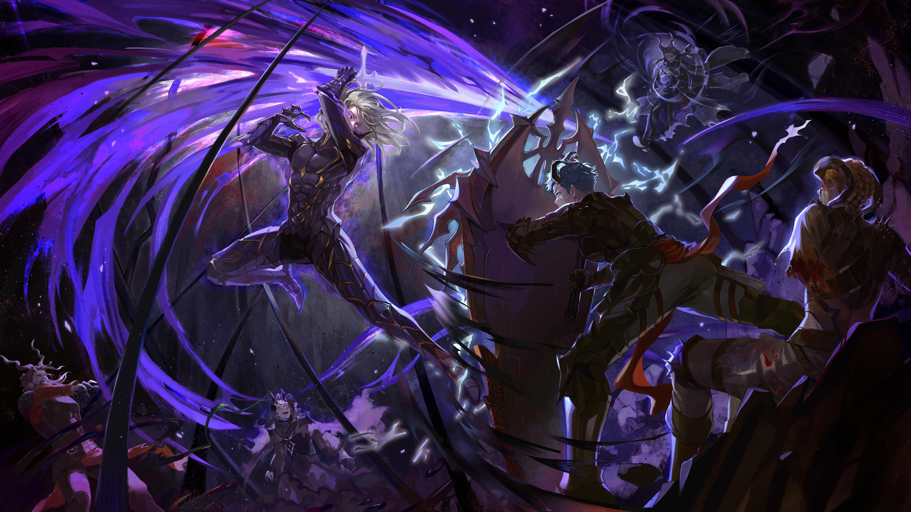

What is Manhwa?
Manhwa refers to South Korean comics or graphic novels. It encompasses a wide range of genres, styles, and storytelling techniques, similar to Japanese manga or Western comics. Manhwa has a rich history that dates back to the early 20th century but has experienced significant growth and evolution in recent decades, particularly with the rise of digital platforms and international popularity.
One notable aspect of manhwa is its diverse storytelling approaches, which often blend elements of traditional Korean culture with modern themes and influences from other cultures. From action-packed adventures and romantic comedies to fantasy epics and slice-of-life dramas, manhwa offers something for every reader. With its vibrant artwork, compelling narratives, and distinct cultural perspectives, manhwa continues to captivate audiences both in South Korea and around the world, contributing to the global popularity of East Asian comics and pop culture.
Difference between Manga & Manhwa
Manga and manhwa are both forms of comics, but they originate from different countries and have distinct characteristics.
1. Origin and Language: Manga is a term used for Japanese comics, while manhwa refers to South Korean comics. As such, manga is written and illustrated by Japanese creators, typically in Japanese language, while manhwa is created by South Korean artists and authors, often in Korean language.
2. Art Style: While there can be overlap, manga and manhwa often have slightly different art styles. Manga tends to feature more exaggerated facial expressions, larger eyes, and distinct character designs, influenced by traditional Japanese aesthetics. Manhwa, on the other hand, may have slightly more realistic proportions and drawing styles, often influenced by both traditional Korean art and Western comic book styles.
3. Reading Direction: One of the most noticeable differences is the reading direction. Manga is traditionally read from right to left, starting from what would typically be considered the "back" of the book in Western publishing. Manhwa, like Western comics, is read from left to right.
4. Themes and Storytelling: While both manga and manhwa cover a wide range of genres and themes, there are often cultural differences in the stories they tell. Manga may explore themes deeply rooted in Japanese culture, history, and mythology, while manhwa may incorporate elements of Korean culture, history, and folklore. Additionally, storytelling techniques and narrative structures may vary between the two mediums, influenced by their respective cultural backgrounds.
Recommendations

In a world where dungeons have appeared, harboring monstrous creatures and untold treasures, Jin-Woo, a lowly ranked hunter, seeks to provide for his family. But his life takes a drastic turn when he finds himself trapped in a mysterious, deadly dungeon. Awakening to newfound powers, Jin-Woo becomes a "Player," able to see levels and stats like a game interface. With his newfound abilities, he embarks on a journey of self-discovery and strength, determined to rise from the weakest to the strongest, and unravel the mysteries of this perilous new world. This is the thrilling saga of "Solo Leveling."With his newfound abilities, he embarks on a journey of self-discovery and strength, determined to rise from the weakest to the strongest, and unravel the mysteries of this perilous new world. This is the thrilling saga of "Solo Leveling."With his newfound abilities, he embarks on a journey of self-discovery and strength, determined to rise from the weakest to the strongest, and unravel the mysteries of this perilous new world.
The Beginning afte the End includes, harboring monstrous creatures and untold treasures, Jin-Woo, a lowly ranked hunter, seeks to provide for his family. But his life takes a drastic turn when he finds himself trapped in a mysterious, deadly dungeon. Awakening to newfound powers, Jin-Woo becomes a "Player," able to see levels and stats like a game interface. With his newfound abilities, he embarks on a journey of self-discovery and strength, determined to rise from the weakest to the strongest, and unravel the mysteries of this perilous new world. This is the thrilling saga of "Solo Leveling."With his newfound abilities, he embarks on a journey of self-discovery and strength, determined to rise from the weakest to the strongest, and unravel the mysteries of this perilous new world. This is the thrilling saga of "Solo Leveling."With his newfound abilities, he embarks on a journey of self-discovery and strength, determined to rise from the weakest to the strongest, and unravel the mysteries of this perilous new world.

Tower of GodIn a world where dungeons have appeared, harboring monstrous creatures and untold treasures, Jin-Woo, a lowly ranked hunter, seeks to provide for his family. But his life takes a drastic turn when he finds himself trapped in a mysterious, deadly dungeon. Awakening to newfound powers, Jin-Woo becomes a "Player," able to see levels and stats like a game interface. With his newfound abilities, he embarks on a journey of self-discovery and strength, determined to rise from the weakest to the strongest, and unravel the mysteries of this perilous new world. This is the thrilling saga of "Solo Leveling."With his newfound abilities, he embarks on a journey of self-discovery and strength, determined to rise from the weakest to the strongest, and unravel the mysteries of this perilous new world. This is the thrilling saga of "Solo Leveling."With his newfound abilities, he embarks on a journey of self-discovery and strength, determined to rise from the weakest to the strongest, and unravel the mysteries of this place.